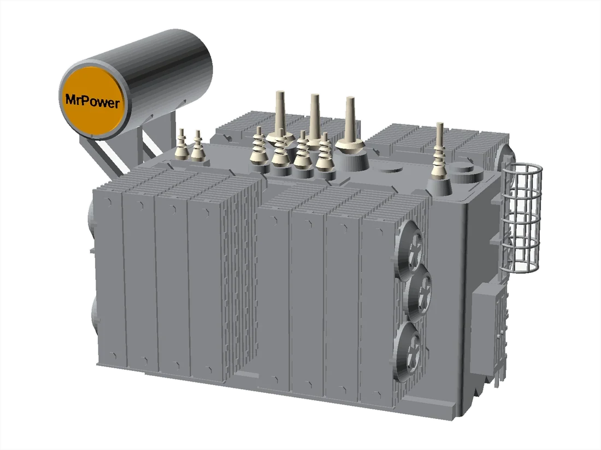
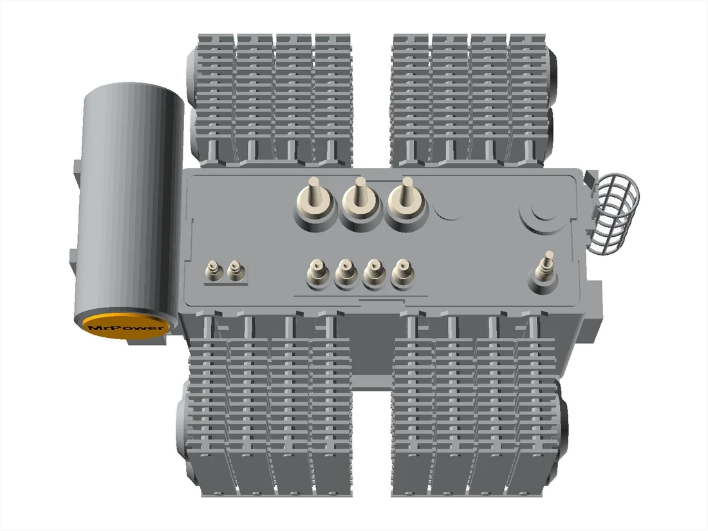
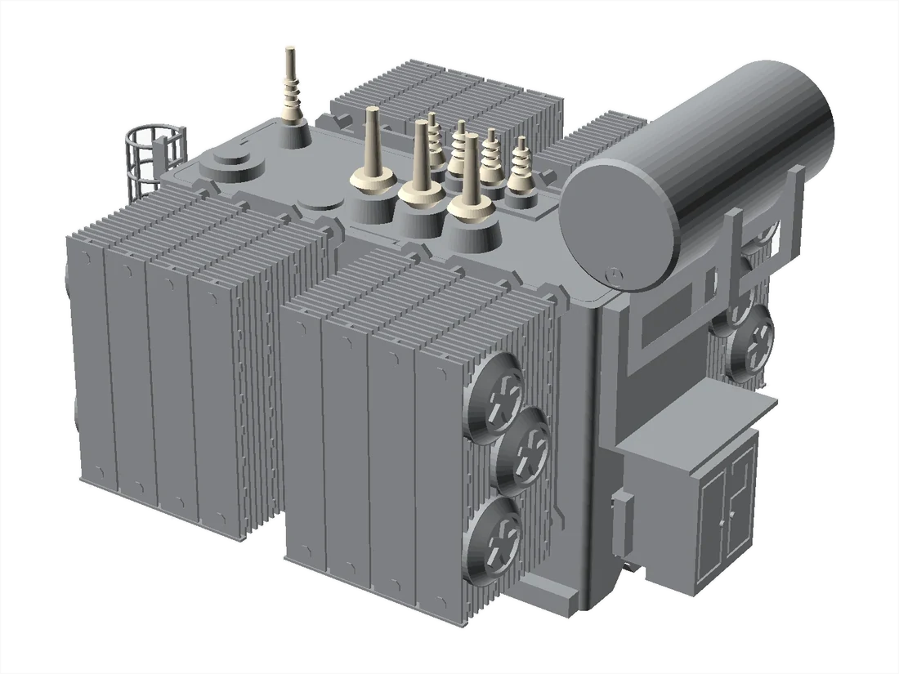
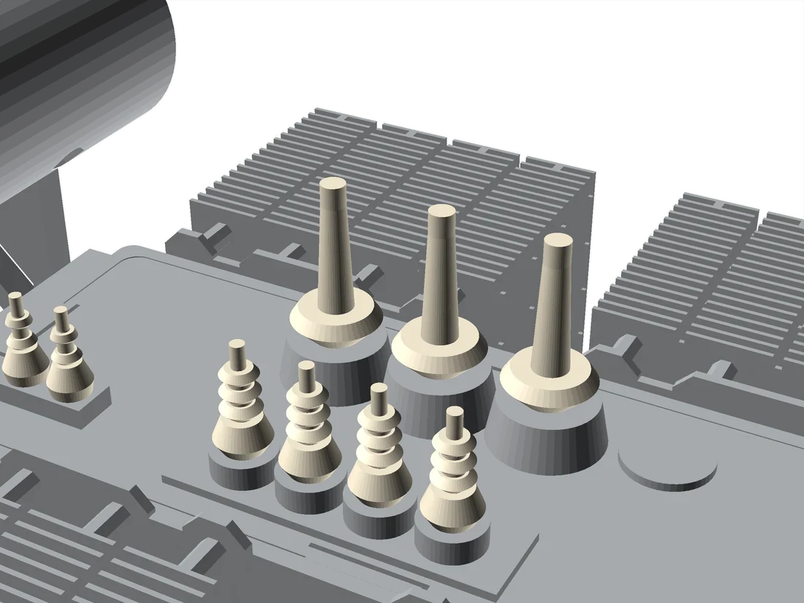
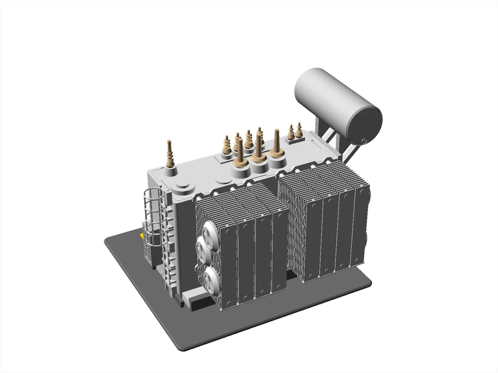

시험 설명용 교보재
축소 변압기 모형
시험 범위를 말로 설명하려면 결국 도면을 펴게 됩니다. 손에 쥐는 모형이 있으면 「이 부싱의 C1 을 재고, 여기서 SFRA 결선을 땁니다」가 한 번에 전달됩니다. 그 용도로 만든 축소 모형입니다.
아래 그림은 3D 모델을 그린 것입니다. 출력물 사진은 준비되는 대로 바꿉니다.
1:50 — 설명용
상담 자리와 현장에 들고 다니는 크기


부싱
절연역률 C1 · C2 의 측정 위치와 탭 단자가 어디인지 손으로 짚어 보여줍니다.
SFRA 결선
기준 측정과 같은 결선을 다시 잡아야 하는 이유를, 단자 위치를 보며 설명합니다.
권선과 철심
주파수 응답이 왜 구조의 지문이 되는지, 탱크 안의 배치를 보며 이야기합니다.
라디에이터
유온과 보정계수를 설명할 때 쓰는 부분입니다.
1:30 — 전시 · 소장용
한쪽 면을 잘라 속을 들여다보게 만든 판



축척이 커지는 만큼 셰드 간격과 핀 피치가 살아납니다. 받침에 설비 사양을 적은 명판을 넣었습니다. 사무실 · 전시장에 두는 용도로 만듭니다.
제원
154kV급 주변압기 기준
| 1:50 | 1:30 | |
|---|---|---|
| 용도 | 시험 설명 · 교육 | 전시 · 소장 |
| 전체 크기 | 약 150 × 100 × 140 mm | 약 250 × 165 × 235 mm |
| 형상 | 부싱 · 라디에이터 · 탱크 | 좌동 · 단면 절개 · 받침 명판 |
크기는 대상 설비에 따라 달라집니다. 고객사 설비 도면을 그대로 뜬 모형은 만들지 않습니다 — 특정 설비가 식별되지 않는 일반 형상으로 제작합니다.
제작 문의
교육 · 전시용
수량과 용도, 원하시는 축척을 알려주시면 제작 가능 여부와 기간을 회신드립니다.
제작 문의 메일 보내기| 상호 | 미래전력연구소 |
|---|---|
| 전화 | 010-8001-0119 |
| 이메일 | justin.hans@outlook.com |